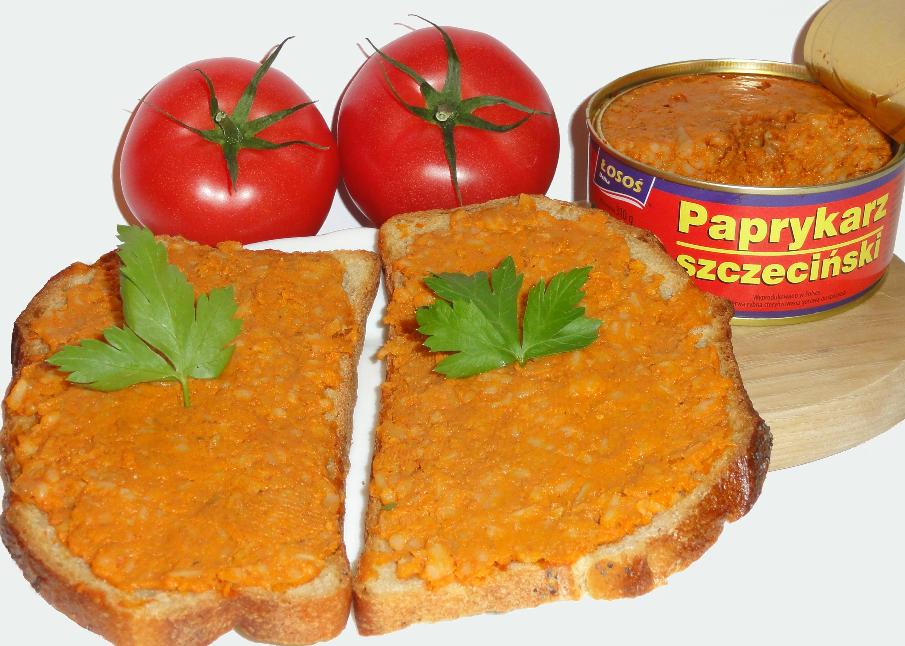
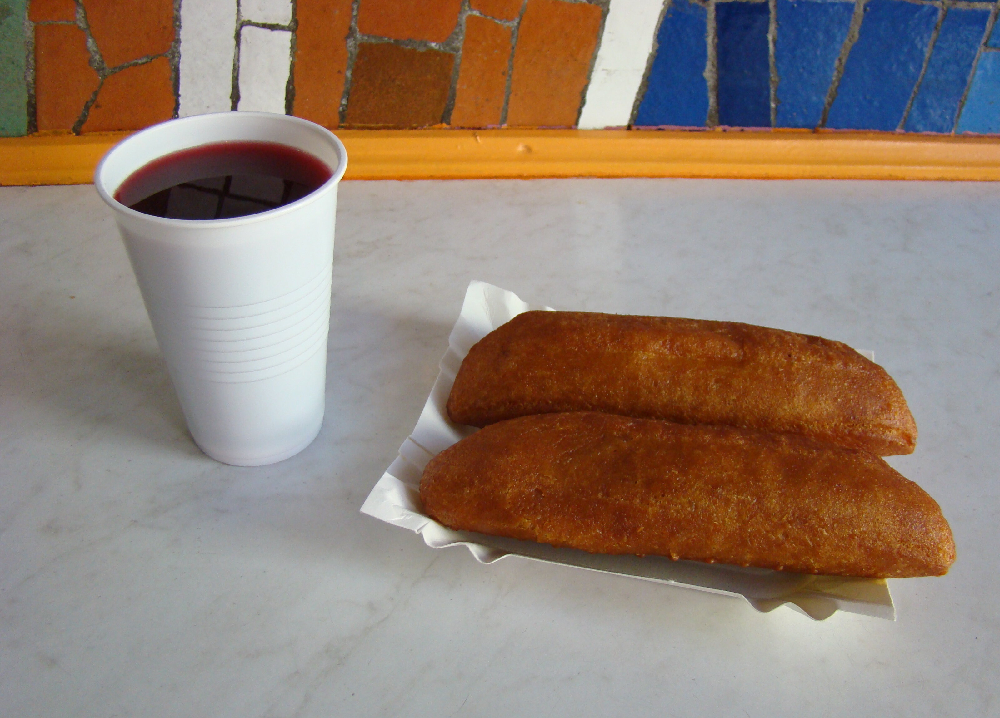
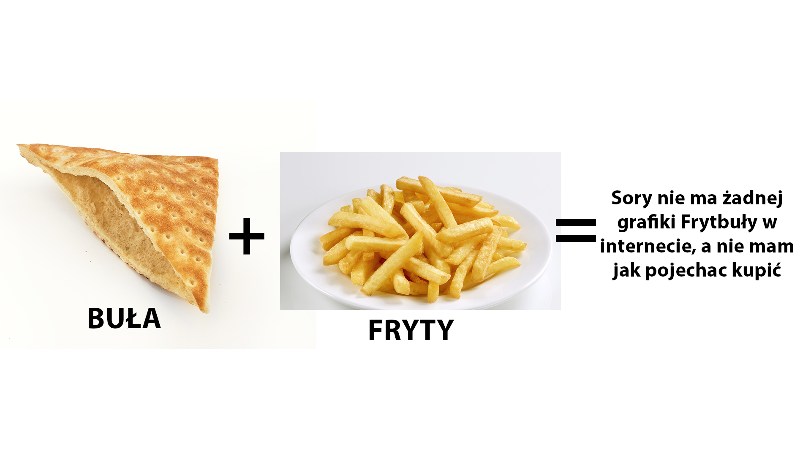
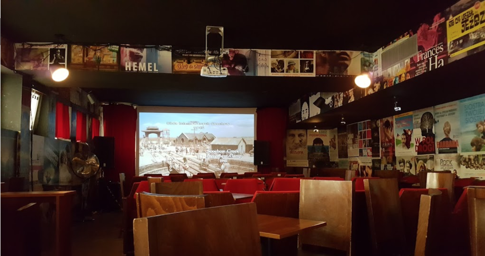
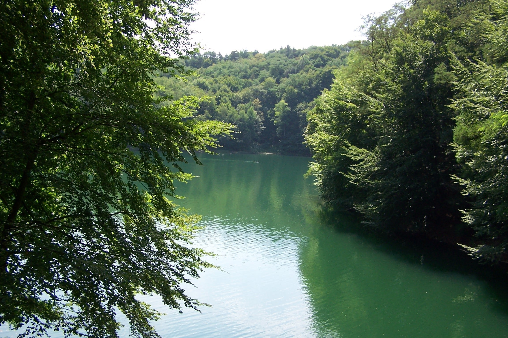
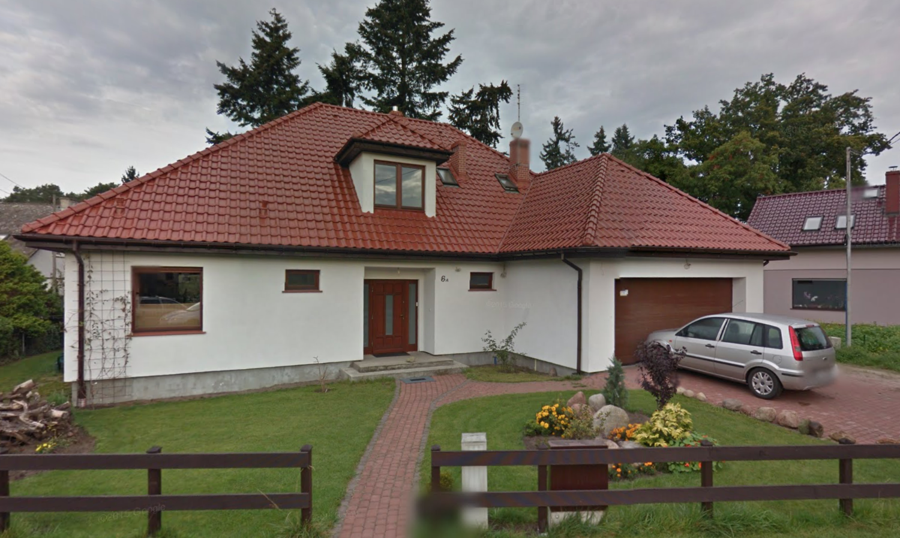

Menu strony
Szczecińskie kulinaria
Paprykarz szczeciński

Najbardziej znanym przysmakiem nadmorskiego miasta Szczecin jest paprykarz szczeciński. Jest to miks ryby, ryżu, koncentratu pomidorowego oraz różnych warzyw, doprawiony różnymi przyprawami. Po więcej informacji kliknij tutaj.
Pasztecik szczeciński

Przekąska składająca się z ciasta drożdżowego smażonego na głębokim tłuszczu, przeważnie wypełniona serem i pieczarkami, mięsem lub szpinakiem. Tradycyjnie, do pasztecika powinno się pić barszcz czerwony. Aby dowiedzieć się więcej kliknij tutaj.
Frytbuła

Głównym daniem, które powinien chociaż spróbować każdy odwiedzjący, niezależnie od wieku, płci czy majątku, MUSI chociaż spróbować tego delikatesu regionalnego jakim jest frytbuła. No co tu dużo mówić, jest to bułka z frytkami z dodatkiem sosu. Ludzie twierdzą, że sos cacyki jest obrzydliwy, ale jako prawdziwy koneser polecam ten sos na pierwszy i każdy raz jako, że jest to po prostu sos czosnkowy Deluxe.
Nie tylko jedzeniem człowiek żyje
Filharmonia
W Szczecinie znajduje się również nagradzana w wielu konkursach architektonicznych filharmonia. Wieczorami jest oświetlana różnymi barwami, a w święta oświetlana jest adekwatnie do dnia.

Dźwigozaury
Od paru lat, dużą furorę robią dźwigozaury. Podświetlane różnymi kolorami dźwigi, które wieczorami tworzą bajeczne iluminacje. Must see na wieczornym spacerze.
Český Film
Szczecińskie puby nieszególnie odbiegają jakością czy też zaopatrzeniem w porównaniu do warszawskich, ale jest jedno miejsce, które jest wyjątkowe ze względu na swój niecodzienny klimat. Jest to mianowicie Český Film. Pub, w którym puszczane są filmy, z kranów leją się kraftowe piwa, a sala wypełniona jest fotelami kinowymi jak i również zwykłymi stolikami. Idealne miejsce dla koneserów trunków niskoalkoholowych jak i fanów dobrego kina. Świetna alterantywa na typową randkę w kinie.

Jezioro Głębokie
Jeśli masz już dosyć miejskiego zgiełku i chcesz w końcu poodychać świerzym powietrzem, to spacer wokół jeziora Głębokiego jest idealną opcją. Pełno zieleni i śpiewających ptaków, zachwyci niejednego gbura. Trasa zajmuje około 1,5h, więc jest to idealne miejsce na poobiadowy, niedzielny spacerek. Nazwę zawdzięcza swoją maksymalną głębokością 6 m.

Jezioro Szmaragdowe
Drugim przepięknym jeziorem jest jezioro szmaragdowe, położone na drugim końcu Szczecina względem Głębokiego. Wokół jeziora jest pełno ścieżek zdrowia, także każda wycieżka nad ten akwen może całkowicie nową przygodą. Nazwę swą zawdzięcza, a jakże, swojemu niecodziennemu kolorowi, powstałemu na wskutek zawartości węglanu wapnia, pochodzącego z rozpuszczania kalcytu.
Okolice Szczecina
Jedynym miejscem wartym odwiedzenia, które nie jest w Szczecinie jest mój dom.
Przydatne linki
- Strony warte uwagi